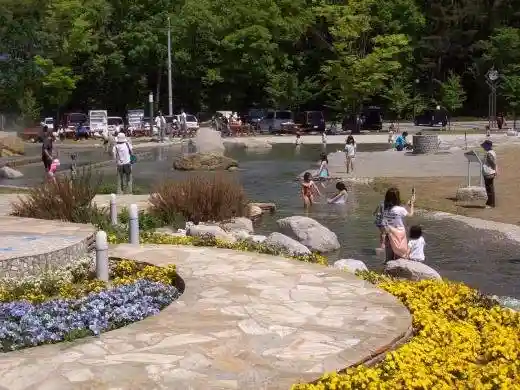
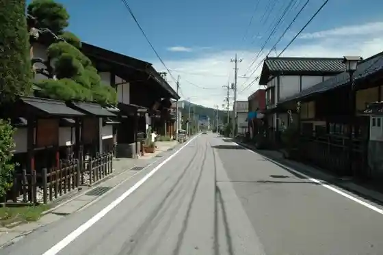
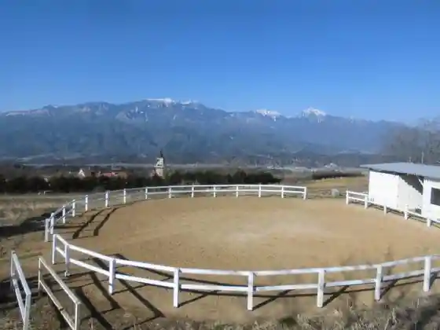

Hachigagaku Kogen Line Higashisawa Bridge
Hokuto, Yamanashi · 0551-30-7866 · Official / source link
Shichiken Shirasu Meisui Koen Beruga
Hokuto, Yamanashi · 0551-35-4411 · Official / source link

Daigaharajuku
Hokuto, Yamanashi · 0551-30-7866 · Official / source link

Naka Village Kiisu He Ringu Art Museum
Hokuto, Yamanashi · Official / source link
SUNNY FIELD in AKENO HORSE FARM
Hokuto, Yamanashi · 080-1156-2571 · Official / source link

Akadake
Hokuto, Yamanashi · 0551-30-7866 · Official / source link
Yoko Yama
Hokuto, Yamanashi · 0551-42-1351 · Official / source link
Mitake
Hokuto, Yamanashi · 0551-42-1351 · Official / source link
Amagoi Gaku
Hokuto, Yamanashi · 0551-42-1351 · Official / source link
Nokogiridake
Hokuto, Yamanashi · 0551-42-1351 · Official / source link
Kaikomagagaku
Hokuto, Yamanashi · 0551-42-1351 · Official / source link
Yamanashi Prefectural Hachigagaku Shizen Fureai Center
Hokuto, Yamanashi · 0551-48-2900 · Official / source link
Arai Ringo Sono
Hokuto, Yamanashi · 0551-25-4162 · Official / source link
Enmei Soba / Supateio Obuchizawa
Hokuto, Yamanashi · 0551-36-6121 · Official / source link
Oishii Gakko
Hokuto, Yamanashi · 0551-20-7300 · Official / source link
Takane Kaju Seisan Kumiai
Hokuto, Yamanashi · 0551-47-3011 · Official / source link
Hachigagaku Ronguraidingu
Hokuto, Yamanashi · 0551-45-9853 · Official / source link
Otokyanpu Bokujo Chiroru
Hokuto, Yamanashi · 0551-26-3639 · Official / source link
Shichiken Shirasu Meisui Koen Beruga Ojiro no Mori Campground
Hokuto, Yamanashi · 080-4074-2962 · Official / source link
Ho Ki no Village
Hokuto, Yamanashi · 0551-48-3522 · Official / source link
Mokko Ya Gen
Hokuto, Yamanashi · 0551-35-4777 · Official / source link
Tobo Kama Hachi
Hokuto, Yamanashi · 0551-26-4080 · Official / source link
Prefectural Makiba Park
Hokuto, Yamanashi · 0551-38-0220 · Official / source link
Sandai Kosha Fureai Village Taisho Kan
Hokuto, Yamanashi · 0551-20-7200 · Official / source link
Supateio Taiken Workshop / Supateio Obuchizawa
Hokuto, Yamanashi · 0551-36-6121 · Official / source link
BISTRO TOMATE/ Aguriiburu Mukawa
Hokuto, Yamanashi · 0551-26-3880 · Official / source link
Mori no Asobiba Fitonchiddo
Hokuto, Yamanashi · 0551-45-0821 · Official / source link
Uindosuta Hachigagaku
Hokuto, Yamanashi · 090-1801-4012 · Official / source link
Dogguran Kiyosato Burugurasufurendo Park
Hokuto, Yamanashi · 0551-48-3405 · Official / source link
DOG’S GOODS EASY
Hokuto, Yamanashi · 0551-38-1194 · Official / source link
Hachigagaku Highlands Obuchizawa Ehon Art Museum
Hokuto, Yamanashi · 0551-36-5717 · Official / source link
Kin Nama Iseki
Hokuto, Yamanashi · 0551-32-6498 · Official / source link
Kawamata Kawa Gorge / Doryu Falls
Hokuto, Yamanashi · 0551-30-7866 · Official / source link
Mitake Mizugaki Yama Genryu
Hokuto, Yamanashi · 0551-42-1351 · Official / source link
Otaki Yusui Park
Hokuto, Yamanashi · 0551-30-7866 · Official / source link
Hyuga Yama Haikingukosu
Hokuto, Yamanashi · 0551-42-1351 · Official / source link
Sutama Furusato Park
Hokuto, Yamanashi · 0551-30-7866 · Official / source link
Oishii Market
Hokuto, Yamanashi · 0551-42-1177 · Official / source link
Ishi Sora Kawa Gorge
Hokuto, Yamanashi · 0551-42-1351 · Official / source link
Kiyoharu Geijutsu Village
Hokuto, Yamanashi · 0551-30-7866 · Official / source link
Shingen Bomichi
Hokuto, Yamanashi · 0551-30-7866 · Official / source link
Utsukushi Mori
Hokuto, Yamanashi · 0551-30-7866 · Official / source link
Hokuto Akeno Sanfurawafesu
Hokuto, Yamanashi · 0551-30-7866 · Official / source link
Roadside Station Hakushu
Hokuto, Yamanashi · 0551-20-4711 · Official / source link
Kiyosatokogen Doro Hachigagaku Kogen Bridge
Hokuto, Yamanashi · 0551-30-7866 · Official / source link
Onna Shu Yusui
Hokuto, Yamanashi · 0551-30-7866 · Official / source link
Ojiro Kawa Gorge
Hokuto, Yamanashi · 0551-42-1351 · Official / source link
Jissoji / Yamataka Kamishiro Sakura
Hokuto, Yamanashi · 0551-30-7866 · Official / source link
Mahara Sakura Namiki
Hokuto, Yamanashi · 0551-30-7866 · Official / source link
Hachiemon Deguchi Yusui
Hokuto, Yamanashi · 0551-30-7866 · Official / source link
Mizugaki Yama
Hokuto, Yamanashi · 0551-42-1351 · Official / source link
Kannon Taira
Hokuto, Yamanashi · 0551-30-7866 · Official / source link
Hachigagaku Highlands no Karamatsu Hayashi
Hokuto, Yamanashi · 0551-30-7866 · Official / source link
Yamamoto Kansuke no Haka
Hokuto, Yamanashi · 0551-30-7866 · Official / source link
Mizugaki Yama Mitake no Azumashakunage
Hokuto, Yamanashi · 0551-42-1351 · Official / source link
Tsukane Gakko / Sandai Kosha Fureai Village
Hokuto, Yamanashi · 0551-30-7866 · Official / source link
Tennyo Yama
Hokuto, Yamanashi · 0551-30-7866 · Official / source link
Hotaru Village (Hokuto)
Hokuto, Yamanashi · 0551-30-7866 · Official / source link
Shojingataki
Hokuto, Yamanashi · 0551-30-7866 · Official / source link
Otaki (Hokuto)
Hokuto, Yamanashi · 0551-30-7866 · Official / source link
I Tsume Yusui
Hokuto, Yamanashi · 0551-30-7866 · Official / source link
Mibu no Oka
Hokuto, Yamanashi · 0551-30-7866 · Official / source link
Fujimi Taira Lookout
Hokuto, Yamanashi · 0551-30-7866 · Official / source link
Hirayama Ikuo Shirukurodo Art Museum
Hokuto, Yamanashi · 0551-32-0225 · Official / source link
Sanmedozu Kiyosato Ski Area / Hai Land Park
Hokuto, Yamanashi · 0551-48-4111 · Official / source link
Kiyosato Oka no Park Gorufukosu Park
Hokuto, Yamanashi · 0551-48-3456 · Official / source link
Oka no Park Campground / Kiyosato Oka no Park
Hokuto, Yamanashi · 0551-48-2300 · Official / source link
Yamanashi Meijo
Hokuto, Yamanashi · 0551-35-2236 · Official / source link
Ake no no San Mono Chokubai Tokoro
Hokuto, Yamanashi · 0551-25-5830 · Official / source link
Megami no Mori Sentoraru Garden
Hokuto, Yamanashi · 0551-36-5000 · Official / source link
Aji Takumi
Hokuto, Yamanashi · 0551-48-3068 · Official / source link
hiyori
Hokuto, Yamanashi · 0551-35-9196 · Official / source link
Roadside Station Minami Kiyosato
Hokuto, Yamanashi · 0551-20-7224 · Official / source link
Takeshi no I Shuzo
Hokuto, Yamanashi · 0551-47-2277 · Official / source link
Workshop no Ra
Hokuto, Yamanashi · 0551-36-3357 · Official / source link
Shirasu Ojiro Furora Kyanpusaito
Hokuto, Yamanashi · 0551-45-9164 · Official / source link
Buruberii Akeno Kanko Tsumi Tori Sono
Hokuto, Yamanashi · 0551-25-6032 · Official / source link
Hokuto Omurasaki Center
Hokuto, Yamanashi · 0551-32-6648 · Official / source link
Workshop Gatsu no Te
Hokuto, Yamanashi · 0551-38-1531 · Official / source link
Chokokuka Gu Ryo Workshop
Hokuto, Yamanashi · 0551-32-7155 · Official / source link
Kiyosato Forest
Hokuto, Yamanashi · 0551-48-3151 · Official / source link
Uddopekka
Hokuto, Yamanashi · 0551-46-2450 · Official / source link
Kiyosato Fotoato Museum
Hokuto, Yamanashi · 0551-48-5599 · Official / source link
Haiji no Village (Yamanashi Prefectural Furawa Center)
Hokuto, Yamanashi · 0551-25-4700 · Official / source link
Howaitosadoru
Hokuto, Yamanashi · 0551-35-2695 · Official / source link
Ojiro Kawa Resort Oto Campground
Hokuto, Yamanashi · 0551-35-4410 · Official / source link
Hokuto Igo Art Museum
Hokuto, Yamanashi · 0551-42-1405 · Official / source link
Mizugaki Yama Guriinrojji
Hokuto, Yamanashi · 0551-20-6500 · Official / source link
Tanito Castle Ruins
Hokuto, Yamanashi · 0551-42-1351 · Official / source link
Shirasu Kanko Ojiro Campground
Hokuto, Yamanashi · 0551-35-2345 · Official / source link
Shojingataki
Hokuto, Yamanashi · 0551-42-1351 · Official / source link
Gongen Gaku
Hokuto, Yamanashi · 0551-42-1351 · Official / source link
JR Komisen Kara no Hachigagaku no Byupointo
Hokuto, Yamanashi · 0551-42-1351 · Official / source link
Mizugaki Mizumi / Shiokawa Dam
Hokuto, Yamanashi · 0551-45-0789 · Official / source link
Minami Hachigagaku Hana no Mori Park
Hokuto, Yamanashi · 0551-20-7222 · Official / source link
Hachigagaku Izumi So
Hokuto, Yamanashi · 0551-38-1341 · Official / source link
Iwahara Orchard
Hokuto, Yamanashi · 0551-46-2067 · Official / source link
Kan Workshop
Hokuto, Yamanashi · 0551-47-3632 · Official / source link
Motoya Kawa Gorge
Hokuto, Yamanashi · 0551-30-7866 · Official / source link
Seisen Ryo Yamane Museum
Hokuto, Yamanashi · 0551-48-3577 · Official / source link
Kindaichiharuhiko Kinen Library Kotoba no Museum
Hokuto, Yamanashi · 0551-38-1211 · Official / source link
Takane Ku Line Garuten
Hokuto, Yamanashi · 0551-20-7211 · Official / source link
Hachigagaku Kogen Ohashi Chushajo
Hokuto, Yamanashi · 0551-30-7866 · Official / source link
Akai Hashi Chushajo Lookout
Hokuto, Yamanashi · 0551-30-7866 · Official / source link
Ki no Kagu to Garasu no Workshop Haoto
Hokuto, Yamanashi · 0551-36-2750 · Official / source link
Eigashima Shuzo Sharumanwain
Hokuto, Yamanashi · 0120-35-2602 · Official / source link
Santorii Tennensui Minami Arupusu Shirasu Kojo
Hokuto, Yamanashi · 0551-35-2211 · Official / source link
Buremen Resort Club
Hokuto, Yamanashi · 0551-48-2585 · Official / source link
Kamanashi Kawa Pogatto Park
Hokuto, Yamanashi · 0551-23-3065 · Official / source link
Nagasaka Komyunitei Suteshon
Hokuto, Yamanashi · 0554-42-1373 · Official / source link
Ko Shinto Motomiya Mi So Shi Shrine
Hokuto, Yamanashi · 0551-36-3000 · Official / source link
Tani Sakura Shuzo Yugengaisha
Hokuto, Yamanashi · 0551-38-2008 · Official / source link
Ranguraranchi
Hokuto, Yamanashi · 0551-36-3269 · Official / source link
Kawamata Kawa Gorge Doryu Falls no Autumn Leaves
Hokuto, Yamanashi · 0551-30-7866 · Official / source link
Tomoniko Forest
Hokuto, Yamanashi · Official / source link
Jamukurafuto
Hokuto, Yamanashi · 0551-38-3499 · Official / source link